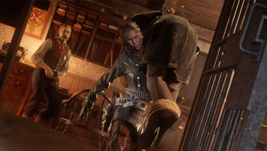

Red Dead Redemption 2, the critically acclaimed open world epic from Rockstar Games and the highest
rated game of the console generation, now enhanced for PC with new Story Mode content, visual
upgrades
and more.
Features
Deep storyline
Huge open world map
Enormous weapon variety
Singleplayer
123132312AS
Multiplayer
If you want to become a fancy gunslinger, then the Red Dead Online Bounty Hunter role should
appeal. You'll unlock various gun spinning tricks as you rank up by bringing in wanted
criminals, as
well as additional weapons such as bolas and a reinforced lasso to help you restrain tough
targets.
Bounties can be acquired from boards near post offices, railway stations, and law offices, with
greater
rewards available for felons you bring back alive, and you can also tackle the weekly Red Dead
Online
Legendary Bounties. Once you hit role rank 12, you'll also get the opportunity to apprehend
other online
players with a bounty of $20 or more, by following an invite if a pursuit is happening nearby.
As a Bounty Hunter, you can unlock unique skills and items including:
Focus: Targets glow red in Eagle Eye
Reinforced Lasso: A lasso made with reinforced rope to keep bounties secure
Reverse Spin: Perform a Reverse Spin with a single pistol or revolver
Tonics Satchel Upgrade: Store more items in your Tonics Pouch
Eagle Eye+: Track enemies while sprinting or galloping
Spin Up: Perform a Spin Up with a single pistol or revolver
Kit Satchel Upgrade: Store more items in your Kit Pouch
Tracking Arrow Pamphlet: A pamphlet recipe on how to craft Tracking Arrows
Reverse Spin Up: Perform a Reverse Spin Up with a single pistol or revolver
Ducking: Duck for protection while on horseback
Bolas: A thrown weapon, perfect for tangling the legs of bounties
Bounty Wagon: A wagon for securely retaining bounty targets
Perception: Receive a notification of bounties from a greater distance
Alternating Flips: Perform Alternating Flips with a single pistol or revolver
Dual Gun Spinning: Perform gun spinning tricks with two pistols or revolvers

If hunting is your game, then taking on the Red Dead Online Trader role is the next logical step.
Working alongside Cripps at your camp, you'll rank up by harvesting pelts and carcasses for
materials, which your trusty companion will then convert into sellable goods. You'll need to send
out these goods as safe local deliveries or riskier long distance runs, and as you progress you'll
unlock better delivery wagons and improved security measures to protect your camp from raids.
Levelling up will also make you a more efficient hunter, allowing you to harvest and carry an
increased amount of materials.
As a Trader, you can unlock unique skills and items including:
Stew Pot: A camp upgrade that unlocks stew recipes to boost cores
Ingredients Satchel Upgrade: Store more items in your Ingredients Pouch
Awarness: Identify rival Trader wagons at an increased range
Canine Warning: Train your dog to warn of thieves raiding your camp
Medium Delivery Wagon: An upgraded wagon that can hold 2 barrels for transport
Weapons Locker: Store weapons for later use
Lance Knife: A bespoke knife style available to Traders only
Efficiency: Learn to increase the amount of usable materials from perfect carcasses
Materials Satchel Upgrade: Store more items in your Materials Pouch
Large Delivery Wagon: An upgraded wagon that can hold 4 barrels for transport
Hunting Wagon: A sturdy wagon fit for carrying multiple carcasses, hides and pelts
Protection: Reduce the chance of raids at your camp
For the completionists out there, the Red Dead Online Collector role should be a perfect fit. You'll
rank up by searching out hidden trinkets, including lost family heirlooms, Tarot cards, and buried
treasure to dig up with your handy field shovel, which you can either sell off individually or work
towards completing sets for a bigger payday. While levelling up you'll improve your searching
skills, allowing you to detect collectible items with greater accuracy, as well as unlocking new
tools such as a metal detector to identify buried treasures and a horse lantern to help you continue
your searches in the dark.
As a Collector, you can unlock unique skills and items including:
Divination: Sense when near collectibles
Pennington Field Shovel: An essential tool for uncovering buried collectibles
Potential: Detect disturbed earth when using Eagle Eye
Potential: Detect disturbed earth when using Eagle Eye
Intuition: Narrow your search area
Horse saddlebag Upgrade: Carry more in your Horse’s saddlebag
Refined Binoculars: Specialized binoculars that make dig sites glow from a great
distance
Aguila Machete: A classic machete restyled for the use of adventurous and
belligerent Collectors
Metal Detector: An important tool which can identify collectibles buried
underground
Equine Assistance: Collect herbs from horseback
Horse Lantern: Light the path ahead with a lantern attached to your horse’s
breastplate
Valuables Satchel Upgrade: Store more items in your Valuables Pouch
Witford Compass: A decorative compass designed to adorn the Gun Belts of budding
Collectors